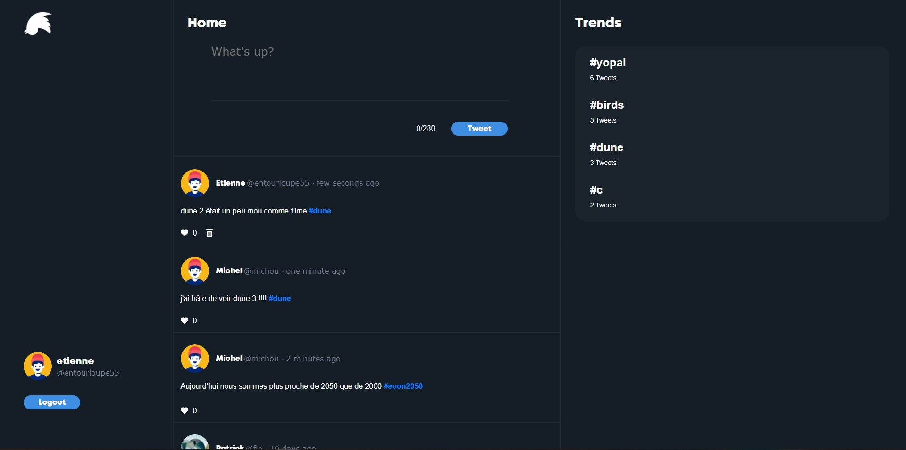
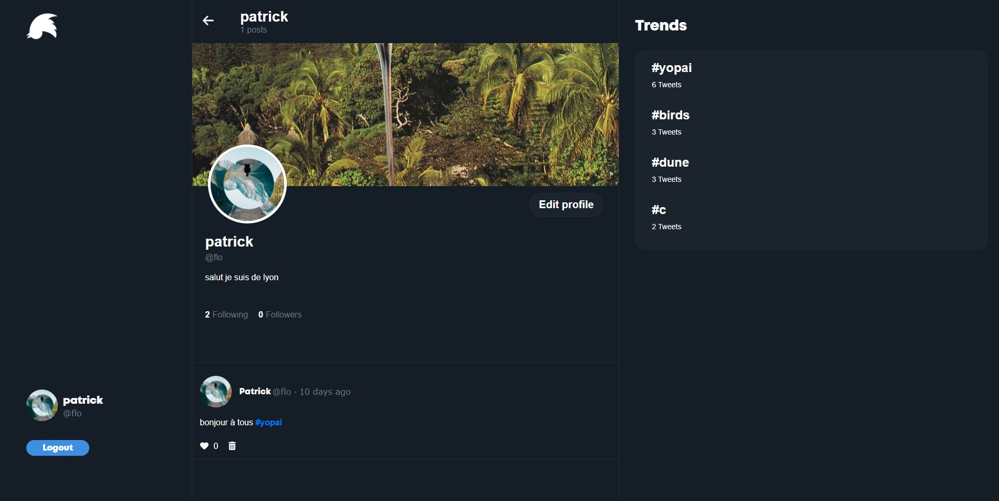
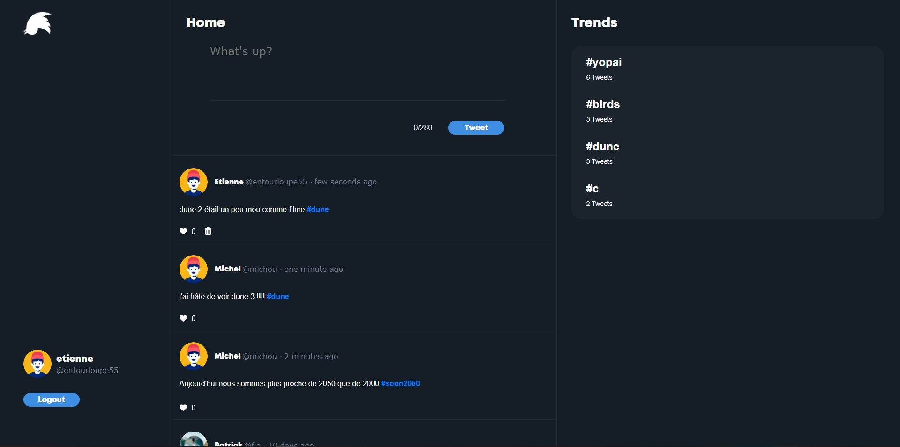
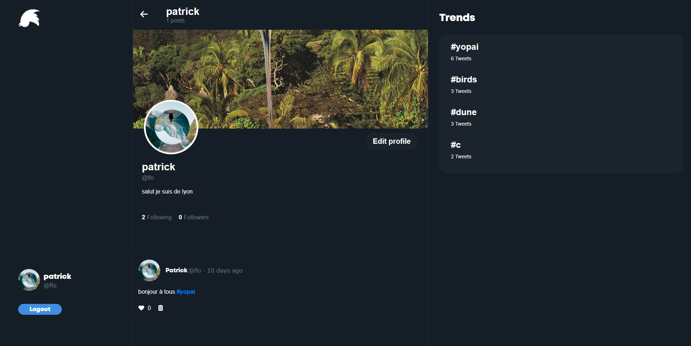

Tweetos
Réplique du site Tweeter
Tweetos est un remake simplifié de Twitter/X que j’ai développé dans le cadre d’un projet personnel. Mon objectif principal était d’approfondir mes compétences techniques, notamment en TypeScript, tout en me familiarisant davantage avec l’architecture d’une application web moderne.
Pour ce projet, j’ai utilisé Next.js pour construire l’interface utilisateur côté client, Express pour gérer l’API, MongoDB comme base de données, et Cloudinary pour l’hébergement et la gestion des images.
Au-delà de l’aspect technique, Tweetos m’a offert une réelle opportunité de monter en compétence sur des outils et des concepts que je voulais maîtriser. J’ai notamment intégré Redux pour la gestion de l’état global de l’application, ce qui m’a permis de mieux structurer les flux de données entre les différents composants. Ce projet m’a également permis d’approfondir l’authentification, le routing dynamique et la gestion des médias.
 


